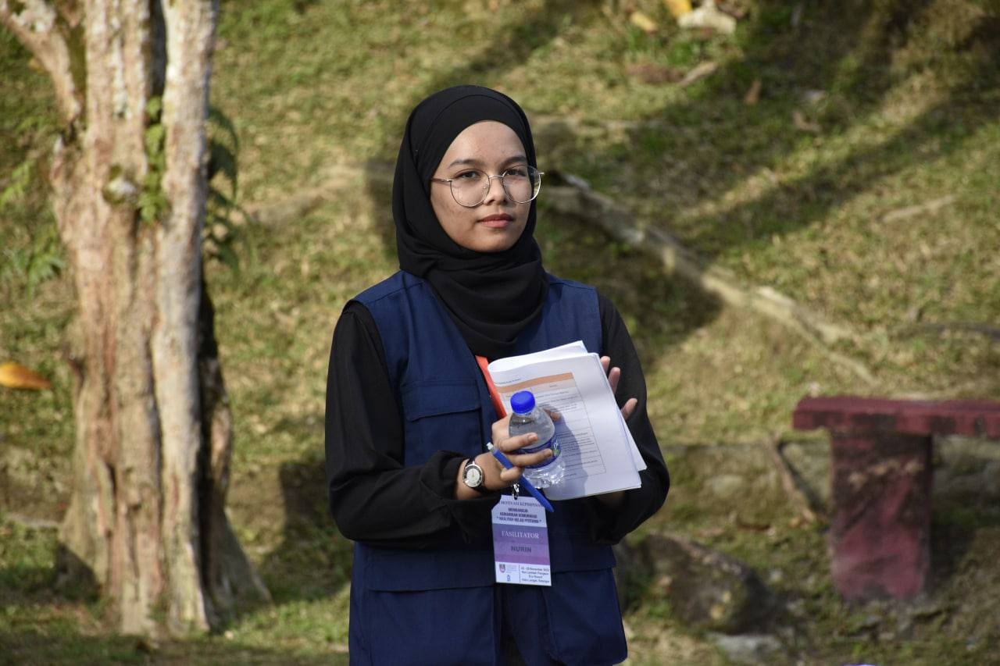
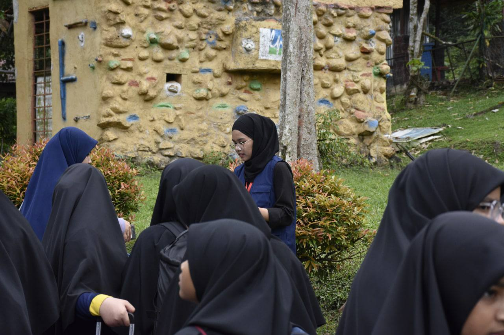
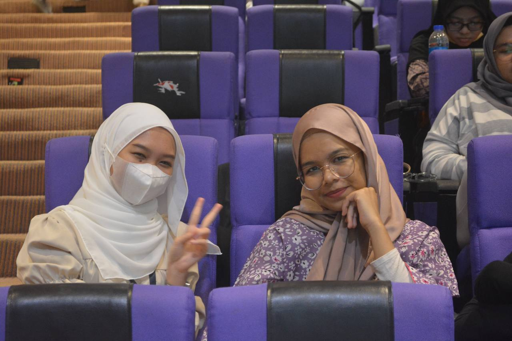
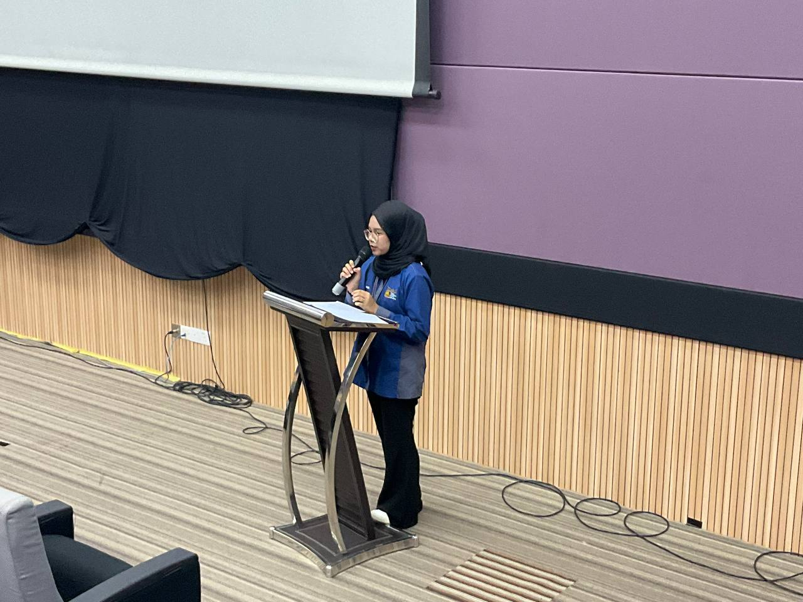
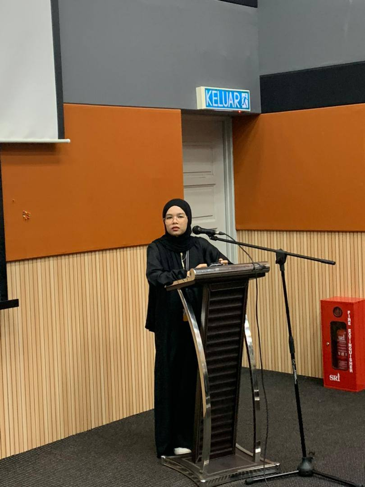
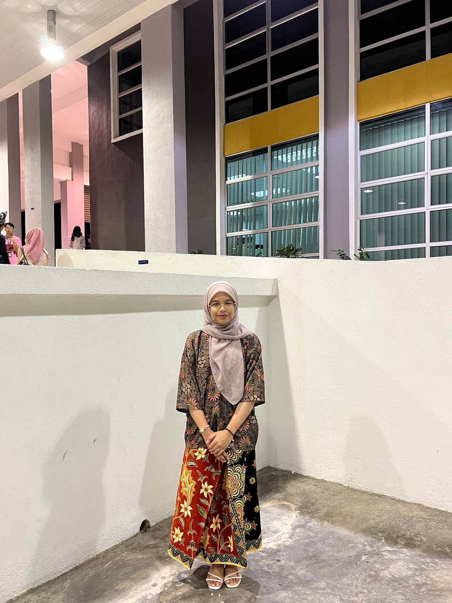
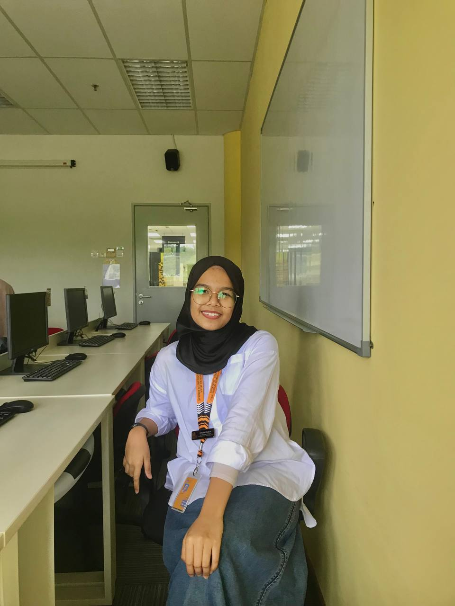
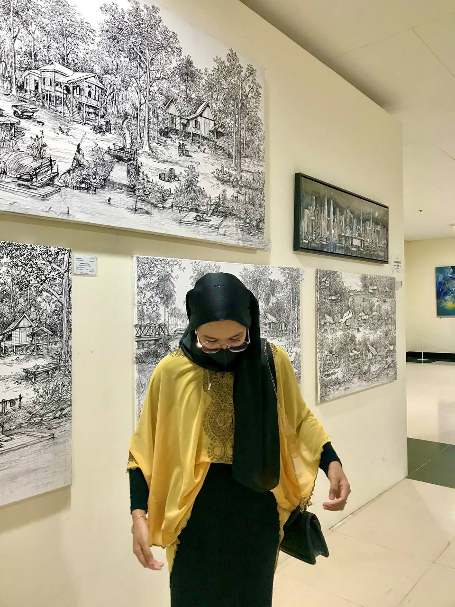
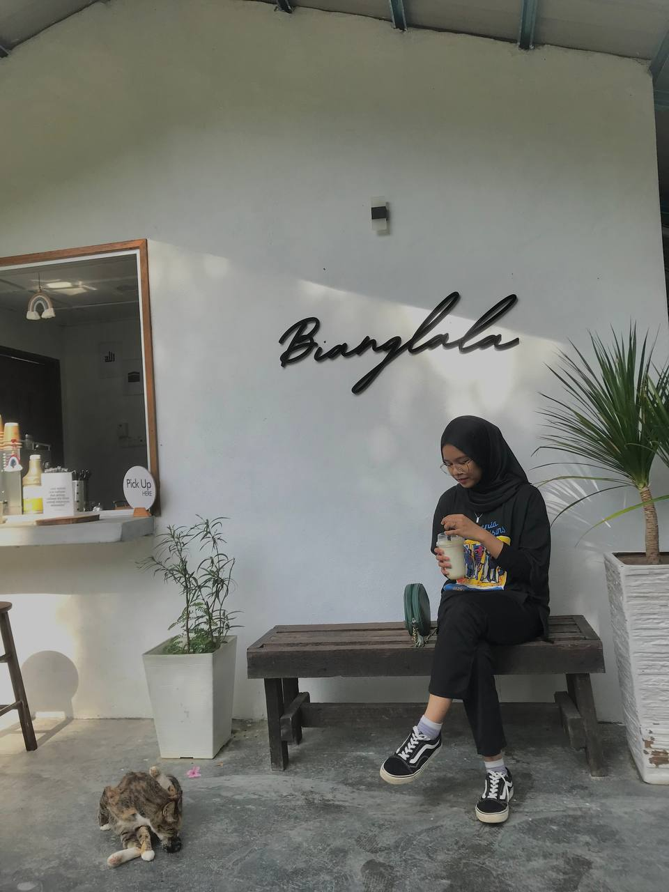
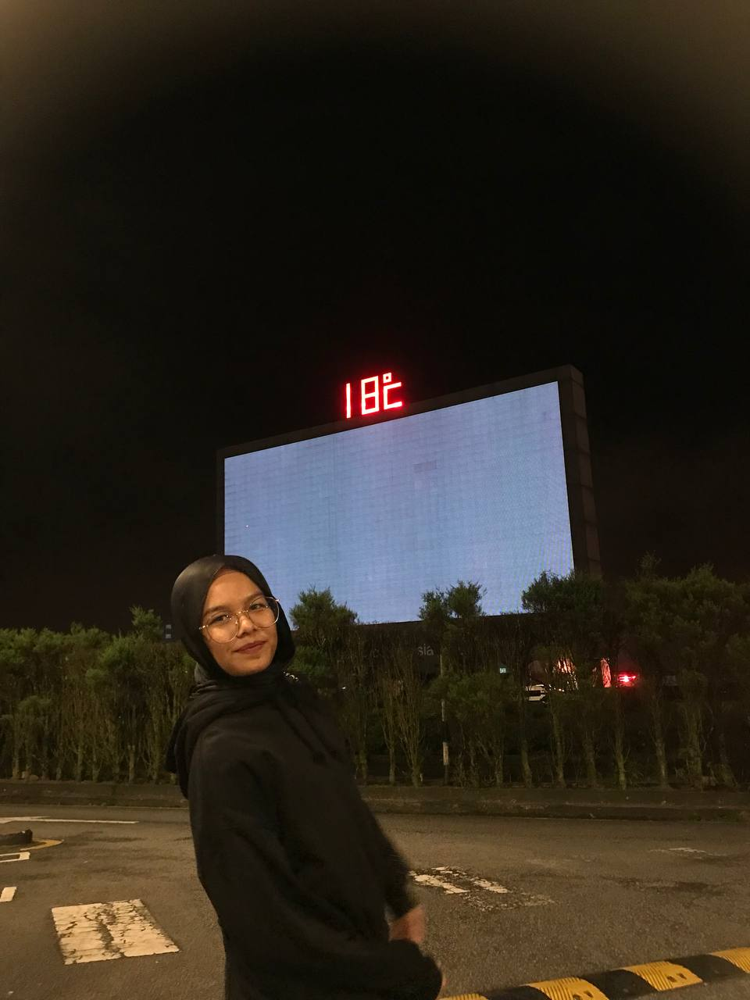

Assalamualaikum wbt, and greetings to readers that visited this site especially Madam Seri Intan Idayu Shahrul Asari. This is the website that has been prepared to forecase a little less of my information and journey as Nurin Maisarah binti Abd Ramli, (2020815994) from N5IM1105B. For my final semester, I find that the subject of Introduction to Web Content really attract my attention due to the practicals that are needed to strive for this subject. For 5 semester, I am sure that this is one of the subject that gave me hands-on experience especially in making my own website from scratch. I would say that it is not easy but at least I tried and I know I could do better.
I would say that I am responsible and hardworking in my studies, however, it is hard for me to make large number of friends. I do enjoy interacting with everyone but usually, I came out as a reserved person. I prefer to be alone most of the time yet I do appreciate having my own company to be with from time to time. I like taking pictures and there are plenty of self-potrait that I kept here.
I have been putting myself in the leadership field since in school, hence I strongly believe that leading is one of my greatest strength to be shown. I enjoy working in a team and organization and it became one of a pleasure to serve the university by participating in a lot of voluteering work. I am ecstatic to see how I would be fond with this kind of approach for self-development.
For this time being, I am hoping to graduate with excellence and find some time to rest myself before I continue my studies. I think it is equally important for my mental and physical to be on the right tract after years of facing hectic journey throughout my student year.
   
| Fullame | Nurin Maisarah binti Abd Ramli | ||||||
|---|---|---|---|---|---|---|---|
| Group | N5IM1105B | ||||||
| Family | Youngest of 3 | ||||||
| Hobby | Reading, writing | ||||||
| Place of Birth | Hospital Putrajaya | ||||||
| Date of Birth | 13th October 2002 | ||||||
| Early education | Pra-sekolah SK Putrajaya Presint 9(2) | SK Putrajaya Presint 9(2) SBT | SMK Putrajaya Presint 9(2) IBWS | UiTM Cawangan Negeri Sembilan Kampus Rembau | |||
|---|---|---|---|---|---|---|---|
| Band preferred | Fourtwnty | Kunto Aji | Nadin Amizah | Imsoniacks | |||
     